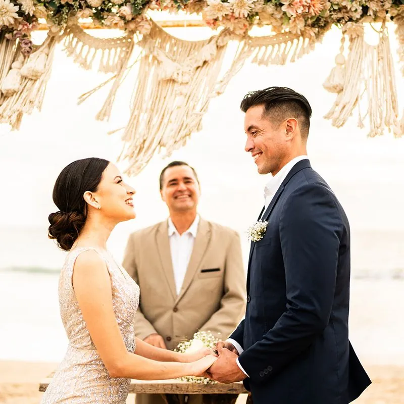

How to officiate a wedding
Four steps, start to finish — and the exact rules for the state where the wedding is happening.
Not ordained yet? Get ordained free first →

To officiate a wedding: (1) get ordained, free and online with the ULC; (2) check the state and county rules, and register if required; (3) plan a ceremony that includes the couple's declaration of intent and your pronouncement; (4) sign the marriage license and return it before the deadline.
Get ordained free → Find your state's rulesEverything you need to do, in order.
Get ordained
Free, takes minutes, and never expires. You'll be legally able to solemnize marriages.
Get ordained free →Check the state & county rules
Some counties want proof of ordination; a few states require registration. Call the clerk that issues the license 30+ days ahead.
Find your statePlan the ceremony
Every legal ceremony needs a declaration of intent ("I do") and a pronouncement. Start from a script or build one.
Browse dozens of free scriptsSign & return the license
Complete your section of the marriage license and return it to the issuing office before the state's deadline.
Marriage license guideChoose the state where the wedding will happen.
Each guide covers officiant requirements, required documents, license waiting periods and filing deadlines — reviewed by our marriage law team.
Also: Puerto Rico · Guam · U.S. Virgin Islands · American Samoa · Northern Mariana Islands · Outside the U.S.

Show up with proof — and the certificate the couple will frame.
The Classic Wedding Set has your Credential of Ministry, wallet card, three marriage certificates and the officiant handbook "By the Power Vested in You."
Common questions
Can a friend or family member legally officiate?
What has to be said for the marriage to be legal?
Do I need witnesses?
Who returns the marriage license?
Step one takes a few minutes.
Get ordained free, then come back to your state guide.
Get Ordained Free →